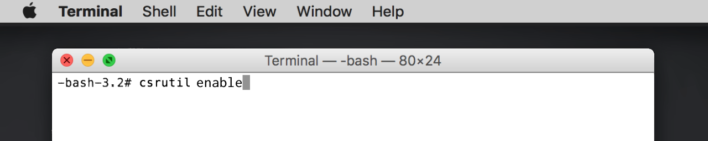

Replacing Non-System Icons
Select your file in Finder, press ⌘ + I or File > Get Info, then drag the icon onto the thumbnail.
This works for most files, folders, and apps.
Replacing System Icons
To replace System Icons, you have to turn System Integrity Protection off temporarily.
- Hold
⌘ + Rwhile restarting your Mac to enter Recovery Mode. - Open
Menubar>Utilities>Terminaland enter the commandcsrutil disableto turn System Integrity Protection off, then restart.
- Use the Get Info panel or LiteIcon to replace the icons for the apps you want to customize.
- Hold
⌘ + Rwhile restarting your Mac to enter Recovery Mode again. - Open
Menubar>Utilities>Terminaland enter the commandcsrutil enableto turn System Integrity Protection back on, then restart normally.
 Your system is now protected, and your icons are customized!